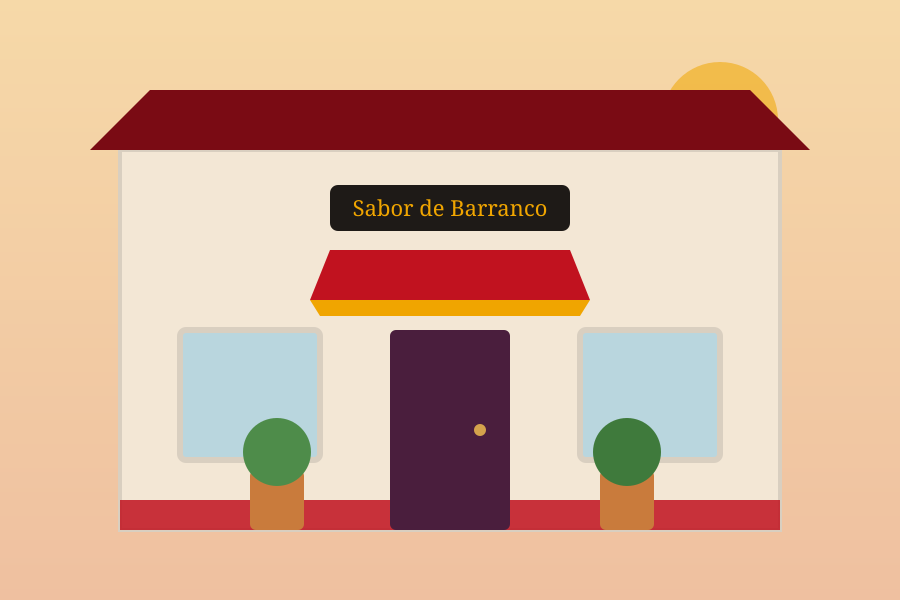
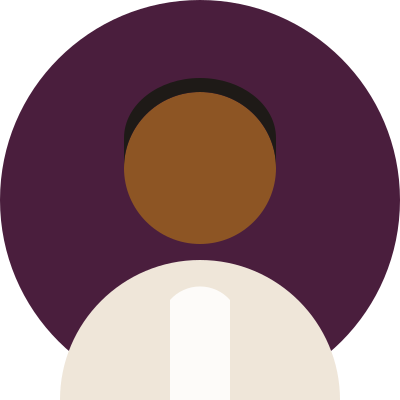

Nuestra historia
De un local de diez mesas a una casona con patio, sin cambiar las recetas.
Todo empezó en 2010, cuando Rosa Chávez llegó desde Lima con un cuaderno de recetas de su abuela y arrendó un local pequeño en Providencia. Al principio solo se servían tres platos: ceviche, ají de gallina y picarones los viernes.
El boca a boca hizo el resto. En 2016 nos mudamos a la casona de Av. Italia, donde por fin tuvimos patio, cocina grande y espacio para las mesas largas que tanto nos gustan. Hoy somos un equipo de dieciocho personas, la mitad de ellas desde el primer año.
Seguimos comprando el pescado de madrugada, moliendo los ajíes en batán y cocinando los guisos a fuego lento. Cambió el tamaño del comedor, no la forma de cocinar.

En Perú se cocina para compartir. Si alguien se levanta de la mesa con hambre o apurado, algo hicimos mal. Rosa Chávez, chef y fundadora
Lo que nos importa
Tres cosas que no negociamos, aunque salga más caro.
Producto fresco
Compramos en el Terminal Pesquero cada mañana. El ceviche se prepara al momento del pedido, nunca antes.
Recetas honestas
Sin colorantes ni atajos. Los ajíes vienen del norte del Perú y las salsas se muelen a mano en batán de piedra.
Equipo estable
Contratos formales, propinas repartidas de forma pareja y cocina cerrada los lunes para que todos descansen.
El equipo
Quienes están detrás de cada plato que sale de la cocina.
Rosa Chávez
Chef y fundadora
Limeña, treinta años de cocina. Manda en el batán y en la olla de los guisos.

Diego Fuentes
Jefe de cocina fría
Responsable de ceviches y tiraditos. Prueba la leche de tigre unas veinte veces al día.
Camila Rojas
Barra y salón
Arma los pisco sours y decide qué suena en el patio los viernes por la noche.